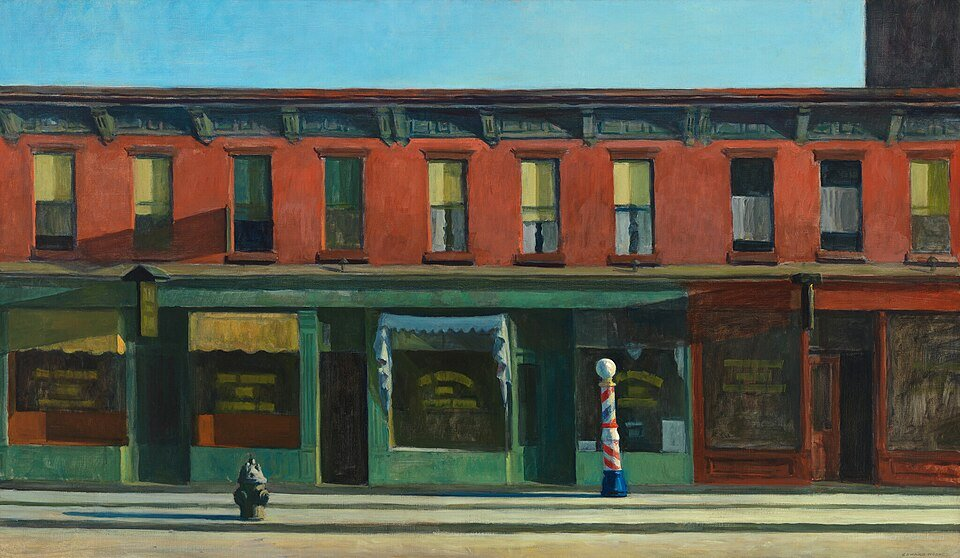

Early Sunday Morning
Edward Hopper · 1930 · Oil on canvas · 89.4 × 153 cm · Whitney Museum of American Art, New York
In copyright. Look and learn: shown for study, not for download.
Hopper first called this painting Seventh Avenue Shops; the Sunday in the title was added by someone else. It was based on a building near his studio, with the doorways made smaller and the shop lettering left unreadable. A few months after it was painted, the Whitney bought it for $2,000 with funds from Gertrude Vanderbilt Whitney, and it became part of the museum's founding collection. The canvas is 153 centimetres wide.